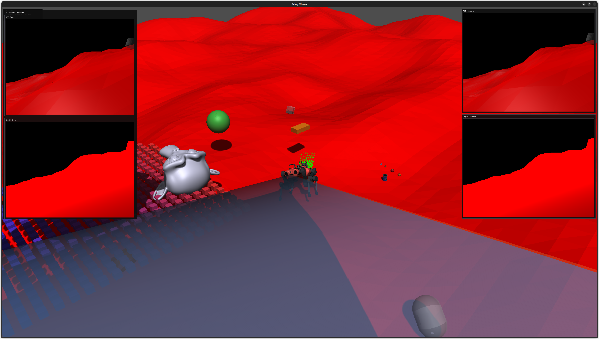

Rayrai Example: Complete Showcase
Overview
Comprehensive rayrai showcase with Go1, Livox LiDAR, D455 RGB/depth sensors, heightmap terrain, YCB objects, custom visuals, instanced geometry, and a live LiDAR point cloud. Use it as an end-to-end check for rayrai and sensor rendering.
Screenshot

Binary
CMake target and executable name: rayrai_complete_showcase.
Run
Build and run from your build directory:
cmake --build . --target rayrai_complete_showcase
./rayrai_complete_showcase
On Windows, run rayrai_complete_showcase.exe instead.
This example uses the in-process rayrai renderer (no external client required).
Details
Loads a sensored ANYmal, heightmap terrain, primitives, and YCB objects.
Updates LiDAR scans into a point cloud and renders RGB/depth sensors.
Shows camera frustums and raw sensor buffers in ImGui.
Source
#include "rayrai/example_common.hpp"
#include <algorithm>
#include <chrono>
#include <cmath>
#include <exception>
#include <memory>
#include <string>
#include <vector>
#include <Eigen/Core>
#include <glm/glm.hpp>
#include "rayrai/Camera.hpp"
#include "rayrai/CameraFrustum.hpp"
#include "rayrai_example_resources.hpp"
#include "raisim/World.hpp"
using namespace gl;
// --------- helpers: raisim → glm ---------
static inline glm::dvec3 toGlm(const raisim::Vec<3>& v) {
return glm::dvec3(v[0], v[1], v[2]);
}
static inline glm::dmat3 toGlm(const raisim::Mat<3, 3>& R) {
// Raisim Mat is column-major like glm
return glm::dmat3(glm::dvec3(R(0, 0), R(1, 0), R(2, 0)), glm::dvec3(R(0, 1), R(1, 1), R(2, 1)),
glm::dvec3(R(0, 2), R(1, 2), R(2, 2)));
}
static void ensureTexture2D(unsigned int& textureId) {
if (textureId != 0)
return;
glGenTextures(1, &textureId);
glBindTexture(GL_TEXTURE_2D, textureId);
glTexParameteri(GL_TEXTURE_2D, GL_TEXTURE_MIN_FILTER, GL_LINEAR);
glTexParameteri(GL_TEXTURE_2D, GL_TEXTURE_MAG_FILTER, GL_LINEAR);
glTexParameteri(GL_TEXTURE_2D, GL_TEXTURE_WRAP_S, GL_CLAMP_TO_EDGE);
glTexParameteri(GL_TEXTURE_2D, GL_TEXTURE_WRAP_T, GL_CLAMP_TO_EDGE);
}
int main(int argc, char* argv[]) {
auto fatalCallback = []() { throw std::exception(); };
raisim::RaiSimMsg::setFatalCallback(fatalCallback);
ExampleApp app;
if (!app.init("Rairay Viewer", 1280, 720)) {
return -1;
}
SDL_DisplayMode dm;
if (SDL_GetCurrentDisplayMode(0, &dm) == 0) {
SDL_SetWindowSize(app.window, dm.w, dm.h);
}
// --- Raisim world & scene setup ---
auto world = std::make_shared<raisim::World>();
const std::string sep = raisim::Path::separator();
const std::string anymalUrdf = rayraiRscPath(argv[0], "anymal_c/urdf/anymal_sensored.urdf");
auto anymal = world->addArticulatedSystem(anymalUrdf);
Eigen::VectorXd jointNominalConfig(anymal->getGeneralizedCoordinateDim());
Eigen::VectorXd jointVelocityTarget(anymal->getDOF());
jointNominalConfig << 0, 0, 2.54, 1.0, 0.0, 0.0, 0.0, 0.03, 0.4, -0.8, -0.03, 0.4, -0.8, 0.03, -0.4, 0.8,
-0.03, -0.4, 0.8;
jointVelocityTarget.setZero();
Eigen::VectorXd jointPgain(anymal->getDOF());
Eigen::VectorXd jointDgain(anymal->getDOF());
jointPgain.setZero();
jointDgain.setZero();
jointPgain.tail(12).setConstant(100.0);
jointDgain.tail(12).setConstant(1.0);
anymal->setGeneralizedCoordinate(jointNominalConfig);
anymal->setGeneralizedForce(Eigen::VectorXd::Zero(anymal->getDOF()));
anymal->setPdGains(jointPgain, jointDgain);
anymal->setPdTarget(jointNominalConfig, jointVelocityTarget);
anymal->setName("anymalC");
auto lidar = anymal->getSensorSet("lidar_link")->getSensor<raisim::SpinningLidar>("lidar");
auto rgbCam =
anymal->getSensorSet("depth_camera_front_camera_parent")->getSensor<raisim::RGBCamera>("color");
auto depthCam =
anymal->getSensorSet("depth_camera_front_camera_parent")->getSensor<raisim::DepthCamera>("depth");
lidar->setMeasurementSource(raisim::Sensor::MeasurementSource::MANUAL);
rgbCam->setMeasurementSource(raisim::Sensor::MeasurementSource::MANUAL);
depthCam->setMeasurementSource(raisim::Sensor::MeasurementSource::MANUAL);
raisim::TerrainProperties terrainProperties;
terrainProperties.frequency = 0.2;
terrainProperties.zScale = 3.0;
terrainProperties.xSize = 40.0;
terrainProperties.ySize = 40.0;
terrainProperties.xSamples = 100;
terrainProperties.ySamples = 100;
terrainProperties.fractalOctaves = 3;
terrainProperties.fractalLacunarity = 2.0;
terrainProperties.fractalGain = 0.25;
terrainProperties.heightOffset = -2;
raisim::HeightMap* hm = world->addHeightMap(0.0, 0.0, terrainProperties);
hm->setAppearance("red");
auto hmv = hm->getHeightVector();
auto sphere = world->addSphere(0.2, 1);
sphere->setPosition(3, 3, 2.0);
sphere->setAppearance("1,1,1,0.2");
auto cylinder = world->addCylinder(0.2, 0.2, 1);
cylinder->setPosition(3, 0, 2.0);
cylinder->setAppearance("1,1,1,0.3");
auto capsule = world->addCapsule(0.2, 0.2, 1);
capsule->setPosition(0, 3, 2.0);
capsule->setAppearance("1,1,1,0.3");
auto box = world->addBox(0.2, 0.2, 0.2, 1);
box->setPosition(-3, -3, 2.0);
box->setAppearance("1,1,1,0.3");
std::string monkeyFile = rayraiRscPath(argv[0], "monkey/monkey.obj");
raisim::Mat<3, 3> inertia;
inertia.setIdentity();
const raisim::Vec<3> com = {0, 0, 0};
auto monkey = world->addMesh(monkeyFile, 1.0, inertia, com);
monkey->setPosition(6, 3, 8.0);
monkey->setAppearance("1,1,1,0.3");
monkey->setBodyType(raisim::BodyType::STATIC);
const std::string basePath = rayraiRscPath(argv[0], "ycb") + sep;
// Store just the filenames
const std::vector<std::string> filenames = {"002_master_chef_can.urdf", "007_tuna_fish_can.urdf",
"012_strawberry.urdf", "013_apple.urdf", "017_orange.urdf"};
for (size_t i = 0; i < filenames.size(); ++i) {
constexpr double yIncrement = 0.2;
constexpr const double yStart = 0.0;
double yPos = yStart + (i * yIncrement); // Calculate y-position
std::string fullPath = basePath + filenames[i];
auto obj = world->addArticulatedSystem(fullPath);
obj->setBasePos({-3, yPos, 0.1});
}
auto rairayWindow = std::make_shared<raisin::RayraiWindow>(world, 1280, 720);
rairayWindow->setGroundPatternResourcePath(
rayraiRscPath(argv[0], "minitaur/vision/checker_blue.png"));
rairayWindow->setBackgroundColor({77, 77, 77, 255});
// --- Custom visuals (not part of raisim::World) ---
auto vizSphere = rairayWindow->addVisualSphere("viz_sphere", 0.25, 0.2f, 0.8f, 0.3f, 0.9f);
vizSphere->setPosition(0.0, -2.0, 0.6);
auto vizBox = rairayWindow->addVisualBox("viz_box", 0.4, 0.2, 0.1, 0.9f, 0.6f, 0.1f, 0.8f);
vizBox->setPosition(-1.5, -1.0, 0.3);
vizBox->setDetectable(true);
auto vizMesh =
rairayWindow->addVisualMesh("viz_mesh", monkeyFile, 0.5, 0.5, 0.5, 0.8f, 0.8f, 0.9f, 1.0f);
vizMesh->setPosition(1.5, -1.0, 0.4);
auto instancedBoxes = rairayWindow->addInstancedVisuals("instanced_boxes", raisim::Shape::Box,
glm::vec3(0.1f, 0.1f, 0.1f), glm::vec4(1.f, 0.2f, 0.2f, 1.f), glm::vec4(0.2f, 0.2f, 1.f, 1.f));
const int gridSize = 20;
const float spacing = 0.18f;
for (int x = 0; x < gridSize; ++x) {
for (int y = 0; y < gridSize; ++y) {
const float weight = gridSize > 1 ? float(x) / float(gridSize - 1) : 0.f;
instancedBoxes->addInstance(
glm::vec3(1.2f + x * spacing, -3.0f + y * spacing, 0.15f), weight);
}
}
// Point cloud to visualize LiDAR returns (uses your PointCloud API)
auto lidarCloud = rairayWindow->addPointCloud("lidar_scan");
if (lidarCloud) {
lidarCloud->pointSize = 3.0f; // tweak as you like
}
// Create cameras for RGB and Depth visualization
auto rgbCamera = std::make_shared<raisin::Camera>(*rgbCam);
auto depthCamera = std::make_shared<raisin::Camera>(*depthCam);
auto rgbFrustum =
rairayWindow->addCameraFrustum("rgb_frustum", glm::vec4(0.2f, 0.6f, 1.0f, 0.5f));
auto depthFrustum =
rairayWindow->addCameraFrustum("depth_frustum", glm::vec4(1.0f, 0.5f, 0.2f, 0.4f));
const int rgbSensorWidth = std::max(1, rgbCam->getProperties().width);
const int rgbSensorHeight = std::max(1, rgbCam->getProperties().height);
const int depthSensorWidth = std::max(1, depthCam->getProperties().width);
const int depthSensorHeight = std::max(1, depthCam->getProperties().height);
std::vector<char> rawRgbBuffer(size_t(rgbSensorWidth) * size_t(rgbSensorHeight) * 4);
std::vector<float> rawDepthBuffer(size_t(depthSensorWidth) * size_t(depthSensorHeight));
unsigned int rawRgbTexture = 0;
unsigned int rawDepthTexture = 0;
// Realtime simulation tracking
const double simTimeStep = world->getTimeStep();
auto lastRealTime = std::chrono::high_resolution_clock::now();
while (!app.quit) {
app.processEvents();
if (app.quit)
break;
// --- Advance world in realtime ---
// Calculate elapsed real-world time
auto currentRealTime = std::chrono::high_resolution_clock::now();
double elapsedRealTime = std::chrono::duration<double>(currentRealTime - lastRealTime).count();
lastRealTime = currentRealTime;
// Integrate multiple times to catch up to real time, but don't overshoot
double targetSimTime = world->getWorldTime() + elapsedRealTime;
int maxSteps = 10;
int stepsThisFrame = 0;
// while (maxSteps-- > 0 && world->getWorldTime() + simTimeStep <= targetSimTime) {
world->integrate();
++stepsThisFrame;
// }
// --- Update custom visuals ---
const double simTime = world->getWorldTime();
if (vizSphere) {
vizSphere->setPosition(0.0, -2.0, 0.6 + 0.15 * std::sin(simTime * 2.0));
}
if (instancedBoxes && instancedBoxes->count() > 0) {
instancedBoxes->setPosition(
0, glm::vec3(1.2f, -3.0f, 0.15f + 0.15f * std::sin(simTime * 3.0)));
}
// --- Ensure sensor pose is up-to-date and fetch it ---
lidar->updatePose(); // allowed by Sensor API
const glm::dvec3 sensorPosW = toGlm(lidar->getPosition());
const glm::dmat3 sensorRotW = toGlm(lidar->getOrientation());
lidar->update(*world);
// --- Update and render RGB camera ---
rairayWindow->renderWithExternalCamera(*rgbCam, *rgbCamera, {});
// --- Update and render Depth camera ---
rairayWindow->renderWithExternalCamera(*depthCam, *depthCamera, {});
rairayWindow->renderDepthPlaneDistance(*depthCam, *depthCamera);
// depthCam->update(*world);
if (rgbFrustum) {
rgbFrustum->updateFromCamera(*rgbCamera);
}
if (depthFrustum) {
depthFrustum->updateFromDepthCamera(*depthCam);
}
if (!rawRgbBuffer.empty()) {
rgbCamera->getRawImage(*rgbCam, raisin::Camera::SensorStorageMode::CUSTOM_BUFFER,
rawRgbBuffer.data(), rawRgbBuffer.size(), /*flipVertical=*/false);
ensureTexture2D(rawRgbTexture);
glBindTexture(GL_TEXTURE_2D, rawRgbTexture);
glTexImage2D(GL_TEXTURE_2D, 0, GL_RGBA8, rgbSensorWidth, rgbSensorHeight, 0, GL_BGRA,
GL_UNSIGNED_BYTE, rawRgbBuffer.data());
}
if (!rawDepthBuffer.empty()) {
depthCamera->getRawImage(*depthCam, raisin::Camera::SensorStorageMode::CUSTOM_BUFFER,
rawDepthBuffer.data(), rawDepthBuffer.size(), /*flipVertical=*/false);
ensureTexture2D(rawDepthTexture);
glBindTexture(GL_TEXTURE_2D, rawDepthTexture);
glTexImage2D(GL_TEXTURE_2D, 0, GL_R32F, depthSensorWidth, depthSensorHeight, 0, GL_RED,
GL_FLOAT, rawDepthBuffer.data());
}
// --- Build the point cloud using PointCloud::positions/colors and upload to GPU ---
if (lidarCloud) {
const auto& scanS = lidar->getScan(); // sensor-frame points (raisim::Vec<3>)
// Resize and fill positions/colors
lidarCloud->positions.clear();
lidarCloud->colors.clear();
lidarCloud->positions.reserve(scanS.size());
lidarCloud->colors.reserve(scanS.size());
const glm::vec4 kColor(0.f, 1.f, 0.f, 1.f); // green
for (const auto& ps : scanS) {
// sensor → world: pW = R_W * pS + t_W
const glm::dvec3 pS(ps[0], ps[1], ps[2]);
const glm::dvec3 pW = sensorRotW * pS + sensorPosW;
lidarCloud->positions.emplace_back(glm::vec3(pW)); // cast to float
lidarCloud->colors.emplace_back(kColor);
}
// Upload to GPU buffers
lidarCloud->updatePointBuffer();
}
// --- ImGui frame & viewer image ---
app.beginFrame();
app.renderViewer(*rairayWindow);
int fbW = 0;
int fbH = 0;
SDL_GL_GetDrawableSize(app.window, &fbW, &fbH);
auto fitToAspect = [](ImVec2 avail, float aspect) {
if (aspect <= 0.0f)
return avail;
ImVec2 size = avail;
size.y = size.x / aspect;
if (size.y > avail.y) {
size.y = avail.y;
size.x = size.y * aspect;
}
return size;
};
const float rgbAspect =
rgbSensorHeight > 0 ? (float)rgbSensorWidth / (float)rgbSensorHeight : 1.0f;
const float depthAspect =
depthSensorHeight > 0 ? (float)depthSensorWidth / (float)depthSensorHeight : 1.0f;
const ImGuiStyle& style = ImGui::GetStyle();
// Settings window in top left corner
{
static bool showCollisionBodies = false;
ImGui::SetNextWindowPos(ImVec2(10, 10), ImGuiCond_FirstUseEver);
ImGui::SetNextWindowSize(ImVec2(250, 80), ImGuiCond_FirstUseEver);
ImGui::Begin("Settings", nullptr, ImGuiWindowFlags_NoCollapse);
if (ImGui::Checkbox("Show Collision Bodies", &showCollisionBodies)) {
rairayWindow->setShowCollisionBodies(showCollisionBodies);
}
ImGui::End();
}
// Display camera outputs as overlay windows on the main image
const float windowScale = 0.9f;
const float subWindowWidth = (fbW / 4.0f) * windowScale;
const float padding = 10.0f;
const float rightContentWidth = std::max(1.0f, subWindowWidth - style.WindowPadding.x * 2.0f);
const float rightHeaderHeight = ImGui::GetTextLineHeightWithSpacing() + style.ItemSpacing.y;
const float rgbWindowHeight =
style.WindowPadding.y * 2.0f + rightHeaderHeight + (rightContentWidth / rgbAspect);
const float depthWindowHeight =
style.WindowPadding.y * 2.0f + rightHeaderHeight + (rightContentWidth / depthAspect);
ImGui::SetNextWindowPos(ImVec2(fbW - subWindowWidth - padding, padding));
ImGui::SetNextWindowSize(ImVec2(subWindowWidth, rgbWindowHeight));
ImGui::Begin("RGB Camera", nullptr,
ImGuiWindowFlags_NoResize | ImGuiWindowFlags_NoMove | ImGuiWindowFlags_NoCollapse |
ImGuiWindowFlags_NoSavedSettings | ImGuiWindowFlags_NoTitleBar |
ImGuiWindowFlags_NoScrollbar | ImGuiWindowFlags_NoScrollWithMouse);
ImGui::Text("RGB Camera");
ImGui::Separator();
ImTextureID rgbTex = (ImTextureID)(intptr_t)rgbCamera->getFinalTexture();
ImVec2 rgbImageSize = fitToAspect(ImGui::GetContentRegionAvail(), rgbAspect);
ImGui::Image(
rgbTex, rgbImageSize, ImVec2(0, 1), ImVec2(1, 0), ImVec4(1, 1, 1, 1), ImVec4(0, 0, 0, 0));
ImGui::End();
ImGui::SetNextWindowPos(ImVec2(fbW - subWindowWidth - padding, padding * 2 + rgbWindowHeight));
ImGui::SetNextWindowSize(ImVec2(subWindowWidth, depthWindowHeight));
ImGui::Begin("Depth Camera", nullptr,
ImGuiWindowFlags_NoResize | ImGuiWindowFlags_NoMove | ImGuiWindowFlags_NoCollapse |
ImGuiWindowFlags_NoSavedSettings | ImGuiWindowFlags_NoTitleBar |
ImGuiWindowFlags_NoScrollbar | ImGuiWindowFlags_NoScrollWithMouse);
ImGui::Text("Depth Camera");
ImGui::Separator();
ImTextureID depthTex = (ImTextureID)(intptr_t)depthCamera->getLinearDepthTexture();
ImVec2 depthImageSize = fitToAspect(ImGui::GetContentRegionAvail(), depthAspect);
ImGui::Image(
depthTex, depthImageSize, ImVec2(0, 1), ImVec2(1, 0), ImVec4(1, 1, 1, 1), ImVec4(0, 0, 0, 0));
ImGui::End();
// Raw buffer previews (bottom-left corner)
const float rawWindowWidth = subWindowWidth;
const float rawWindowContentWidth = std::max(1.0f, rawWindowWidth - style.WindowPadding.x * 2.0f);
const float panelLabelHeight = ImGui::GetTextLineHeightWithSpacing();
const float headerHeight = ImGui::GetTextLineHeightWithSpacing() + style.ItemSpacing.y;
const float spacingY = style.ItemSpacing.y;
float rgbImageHeight = rawWindowContentWidth / rgbAspect;
float depthImageHeight = rawWindowContentWidth / depthAspect;
float rawWindowHeight = style.WindowPadding.y * 2.0f + headerHeight + panelLabelHeight +
rgbImageHeight + spacingY + panelLabelHeight + depthImageHeight;
const float maxRawWindowHeight = fbH - padding * 2.0f;
if (rawWindowHeight > maxRawWindowHeight) {
const float availableImageHeight = maxRawWindowHeight - style.WindowPadding.y * 2.0f -
headerHeight - spacingY - (panelLabelHeight * 2.0f);
if (availableImageHeight > 10.0f) {
const float scale = std::max(0.25f, availableImageHeight / (rgbImageHeight + depthImageHeight));
rgbImageHeight *= scale;
depthImageHeight *= scale;
rawWindowHeight = maxRawWindowHeight;
}
}
float rawWindowTop = padding * 2.0f;
if (rawWindowTop + rawWindowHeight > fbH - padding)
rawWindowTop = std::max(padding, fbH - rawWindowHeight - padding);
ImGui::SetNextWindowPos(ImVec2(padding, rawWindowTop));
ImGui::SetNextWindowSize(ImVec2(rawWindowWidth, rawWindowHeight));
ImGui::Begin("Raw Sensor Buffers", nullptr,
ImGuiWindowFlags_NoResize | ImGuiWindowFlags_NoMove | ImGuiWindowFlags_NoCollapse |
ImGuiWindowFlags_NoSavedSettings | ImGuiWindowFlags_NoTitleBar |
ImGuiWindowFlags_NoScrollbar | ImGuiWindowFlags_NoScrollWithMouse);
ImGui::Text("Raw Sensor Buffers");
ImGui::Separator();
ImVec2 rawAvail = ImGui::GetContentRegionAvail();
const float rgbPanelHeight = panelLabelHeight + rgbImageHeight;
const float depthPanelHeight = panelLabelHeight + depthImageHeight;
ImVec2 rgbPanelSize(rawAvail.x, rgbPanelHeight);
ImGui::BeginChild("RGBRawPanel", rgbPanelSize, true,
ImGuiWindowFlags_NoScrollbar | ImGuiWindowFlags_NoScrollWithMouse);
if (rawRgbTexture != 0) {
ImGui::Text("RGB Raw");
ImVec2 rgbAvailInner = ImGui::GetContentRegionAvail();
ImVec2 rgbSize = fitToAspect(rgbAvailInner, rgbAspect);
ImGui::Image((ImTextureID)(intptr_t)rawRgbTexture, rgbSize, ImVec2(0, 1), ImVec2(1, 0));
} else {
ImGui::Text("RGB Raw not ready");
}
ImGui::EndChild();
ImGui::Dummy(ImVec2(0, spacingY));
ImVec2 depthPanelSize(rawAvail.x, depthPanelHeight);
ImGui::BeginChild("DepthRawPanel", depthPanelSize, true,
ImGuiWindowFlags_NoScrollbar | ImGuiWindowFlags_NoScrollWithMouse);
if (rawDepthTexture != 0) {
ImGui::Text("Depth Raw");
ImVec2 depthAvailInner = ImGui::GetContentRegionAvail();
ImVec2 depthSize = fitToAspect(depthAvailInner, depthAspect);
ImGui::Image((ImTextureID)(intptr_t)rawDepthTexture, depthSize, ImVec2(0, 1), ImVec2(1, 0));
} else {
ImGui::Text("Depth Raw not ready");
}
ImGui::EndChild();
ImGui::End();
app.endFrame();
}
if (rawRgbTexture != 0)
glDeleteTextures(1, &rawRgbTexture);
if (rawDepthTexture != 0)
glDeleteTextures(1, &rawDepthTexture);
rairayWindow.reset();
app.shutdown();
return 0;
}